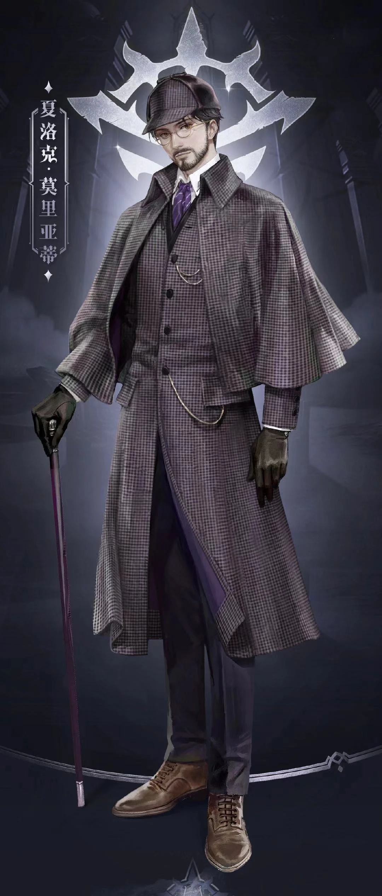
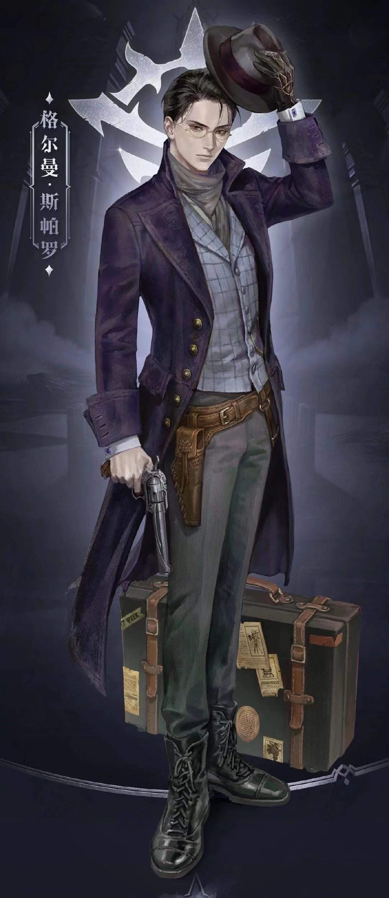
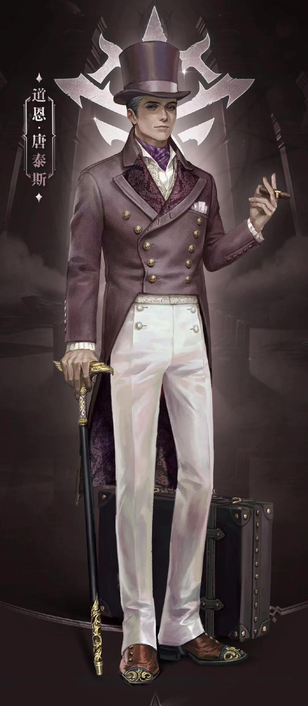
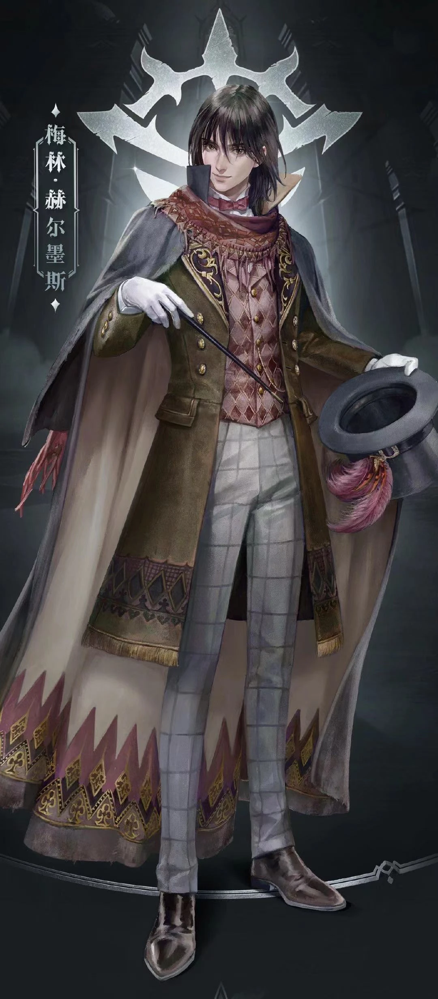

1. The Fool
“If I wanted to give you my blessings, I wouldn’t have said that. I would have said, I hope that you will still love your family and friends after seeing them as they are.„
— Klein to Audrey on
, Chapter 1228The Fool is an old god that seeks to revive and reclaim his authority. "He" is mysterious and seems to be executing "His" will through the Tarot Club. "He" does not speak often, especially in later meetings, and only gives hints to Tarot Club members. "He" also does not allow members to offend "Him" and punished Cattleya once she let out hints about "Him". "He" is the God of the Church of the Fool.
A. Appearance

After becoming The Fool: "His" facial features are a mix of Klein Moretti and Gehrman Sparrow. "He" wears an illusory mask with blank facial features (uniqueness of the Fool pathway) and wears a black windbreaker. "He" wears a pair of black gloves (uniqueness of the Error pathway) and holds a staff inlaid with star speckles (uniqueness of the Door pathway).
2. Sherlock Moriarty
Klein did not take much effort distinguishing Sherlock from Klein, so in many ways, they are similar, except that Sherlock is good at deduction and is a great detective.
A. Appearance

Sherlock Moriarty has Brown eyes, slightly long black hair, average-featured face with some stubs of facial hair, thin yet with a moderately muscular build.
B. Relationship
- Talim Dumont: Friend, Klein was involved in the case of his death.
- Mike Joseph: Friend, a reporter who hired Klein as a bodyguard for an investigation.
- Aaron Ceres: Friend, father of the Will Auceptin.
- Sharron and Maric: Friend, they helped each other in multiple occasions.
- Isengard Stanton: Friend, he was one of his connection to the Church of the God of Steam and Machinery.
- Old Kohler: Worked as Klein's informant in East Borough.
- Ian Wright: Friend, he was Klein's first client as a detective.
- Utravsky: Friend, Klein helped him.
- Emlyn White: Friend
C. Reference
Sherlock Moriarty. This name is a combination of names from the famous detective Sherlock Holmes and his nemesis, James Moriarty. The fictional characters in the Sherlock Holmes stories written by Sir Arthur Conan Doyle.
3. Gehrman Sparrow/The World
He is a crazy adventurer who began to hunt pirates on the sea before being involved in many Beyonders' incidents at the Demigod level. He doesn't talk much, stays cold and calm all the time while being very assertive with others. Gehrman is also known as The World of the Tarot Club, a mad believer and the Angel of Redemption of The Fool.
A. Appearance

Gehrman Sparrow is a young gentleman with gold-rimmed glasses, neat black hair and dark brown eyes. He looks colder and sharper than Sherlock or Klein. Gehrman refined demeanor and gloomy aura make him appear as an experienced, ruthless adventurer.
B. Relationship
- Blazing Danitz: Servant/Friend/Fool's believer
- Reinette Tinekerr: Messenger/Ally
- Edwina Edwards: Ally/Friend
- Frank Lee: Friend
- Anderson Hood : Ally/Friend
C. Reference
Gehrman Sparrow: Gehrman is a reference to Gehrman, the First Hunter, a boss character in Bloodborne. And Captain Jack Sparrow, the protagonist of the Pirate of the Caribbean.
4. Dwayne Dantès
Dwayne Dantès is a mysterious tycoon from Desi Bay and a devout believer of Evernight Goddess. He came to Backlund to seek new opportunities, and to a certain extent, tries to enter the upper hierarchy of Backlund nobles.
In fact, he was an adventurer who accumulated wealth in the Southern Continent, and since the fortune was not gained in a completely legal way, he came to Backlund to clean up the fortune.
If any official Beyonders wish to dig deeper than this, they would then discover that he is a cheat who disguises himself as a rich man and makes big investments for the final scam.
He is known as a womanizer because of Arrodes.
A. Appearance

Dwayne Dantès is a middle-aged gentleman with a mature appearance, deep-blue eyes, black hair with few silver strands, and profound gaze. Someone who exhibits the aura of a person who had experienced the vicissitudes of life.
B. Relationship
- Walter: Butler
- Richardson: Valet, Land Steward of Maygur Manor
- Taneja: Housekeeper
- Maury Macht: Neighbor
- Portland Moment: Neighbor
C. Reference
Dwayne Dantès: Dantès is a reference to a famous avenger, Edmond Dantès from The Count of the Monte Cristo, a French adventure novel written in 1844.
5. Merlin Hermes
Merlin Hermes: A wandering magician who travels and grants people's wishes. “He” is the creator of the Fully Automatic Wishing Machine, a machine that can supposedly grant its users three wishes. However, it was actually Merlin Hermes granting the wishes. "He" calls himself the Miracle Magician and servant of "The Fool", Lord of Mysteries, Great Ruler of the Spirit World."
A. Appearance

Merlin Hermes is a wandering magician, he wears a black robe and classic hat. He looked nothing special.
B. Reference
Merlin Hermes: Merlin refers to the legendary wizard featured in Arthurian legend. And Hermes is originated from Greek Mythology, who is the Herald of the Gods, Protector of travelers and merchants.
.
.